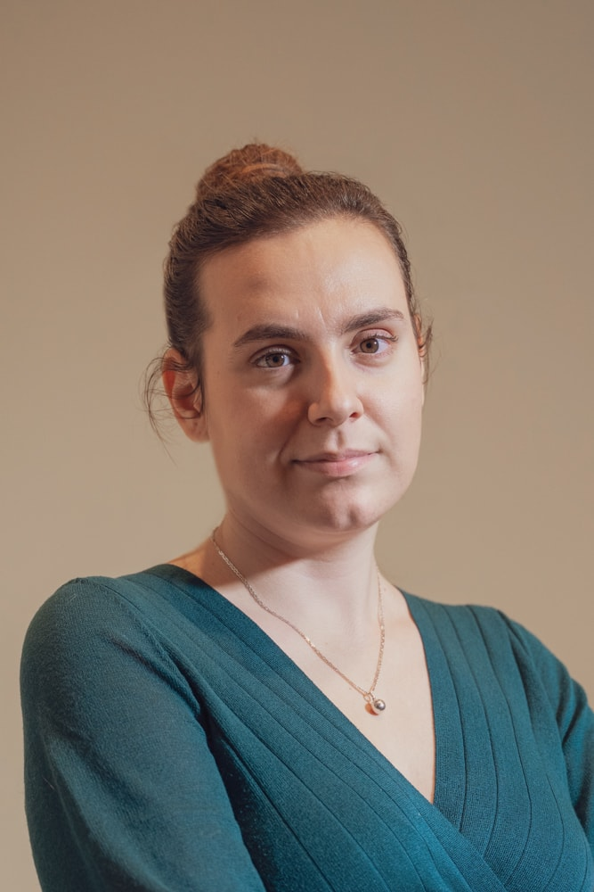

Jedna z najdłużej działających Kancelarii Notarialnych w
Gliwicach
Nasz zespół
W Kancelarii Notarialnej funkcjonuje zespół wykwalifikowanych
pracowników gotowy udzielić Państwu informacji na temat
planowanych czynności, kosztów, niezbędnych dokumentów oraz
wszelkich innych aspektów dotyczących praktyki notarialnej.

Iwona Samorzewska
Notariusz
Jest absolwentem Wydziału Prawa i Administracji Uniwersytetu Jagiellońskiego. Po odbyciu aplikacji notarialnej oraz asesury, w 2000 roku rozpoczęła prowadzenie Kancelarii Notarialnej w Gliwicach.
Warto podkreślić, że to jedna z najdłużej działających Kancelarii Notarialnych na terenie tego miasta, a notariusz Iwona Samorzewska doświadczenie w tym zawodzie zdobywa już od prawie 30 lat.
Jest absolwentem Wydziału Prawa i Administracji Uniwersytetu Jagiellońskiego. Po odbyciu aplikacji notarialnej oraz asesury, w 2000 roku rozpoczęła prowadzenie Kancelarii Notarialnej w Gliwicach.
Warto podkreślić, że to jedna z najdłużej działających Kancelarii Notarialnych na terenie tego miasta, a notariusz Iwona Samorzewska doświadczenie w tym zawodzie zdobywa już od prawie 30 lat.
Aneta Rudnik
Zastępca notarialny Izby Notarialnej w Katowicach
Egzamin notarialny z wynikiem pozytywnym złożyłam we wrześniu 2020 roku. Wcześniej, w latach 2017-2020 odbywałam aplikację notarialną przy Izbie Notarialnej w Katowicach. Jestem absolwentem studiów prawniczych na Wydziale Prawa i Administracji na Uniwersytecie Śląskim w Katowicach, które ukończyłam w 2016 roku uzyskując tytuł magistra prawa. Nadto, ukończyłam studia administracyjne na tymże Wydziale, uzyskując tytuł zawodowy magistra w 2017 roku.
W lutym 2019 roku ukończyłam dwusemestralne studia podyplomowe z zakresu prawa gospodarczego i handlowego na Uniwersytecie Śląskim w Katowicach. W Kancelarii Notarialnej Iwony Samorzewskiej w Gliwicach pracuję od lipca 2018 roku.
Egzamin notarialny z wynikiem pozytywnym złożyłam we wrześniu 2020 roku. Wcześniej, w latach 2017-2020 odbywałam aplikację notarialną przy Izbie Notarialnej w Katowicach. Jestem absolwentem studiów prawniczych na Wydziale Prawa i Administracji na Uniwersytecie Śląskim w Katowicach, które ukończyłam w 2016 roku uzyskując tytuł magistra prawa. Nadto, ukończyłam studia administracyjne na tymże Wydziale, uzyskując tytuł zawodowy magistra w 2017 roku.
W lutym 2019 roku ukończyłam dwusemestralne studia podyplomowe z zakresu prawa gospodarczego i handlowego na Uniwersytecie Śląskim w Katowicach. W Kancelarii Notarialnej Iwony Samorzewskiej w Gliwicach pracuję od lipca 2018 roku.

Dorota Łojewska
Zastępca notarialny
Absolwentka prawa na Uniwersytecie Śląskim. W Kancelarii Notarialnej Iwony Samorzewskiej w Gliwicach pracuje od października 2018 roku.
Zastępca notarialny Izby Notarialnej w Katowicach.
Egzamin notarialny z wynikiem pozytywnym złożyłam we wrześniu 2023 roku. Wcześniej, w latach 2020-2023 odbywałam aplikację notarialną przy Izbie Notarialnej w Katowicach. Jestem absolwentem studiów prawniczych na Wydziale Prawa i Administracji na Uniwersytecie Śląskim w Katowicach, które ukończyłam w 2019 roku uzyskując tytuł magistra prawa.
Absolwentka prawa na Uniwersytecie Śląskim. W Kancelarii Notarialnej Iwony Samorzewskiej w Gliwicach pracuje od października 2018 roku.
Zastępca notarialny Izby Notarialnej w Katowicach.
Egzamin notarialny z wynikiem pozytywnym złożyłam we wrześniu 2023 roku. Wcześniej, w latach 2020-2023 odbywałam aplikację notarialną przy Izbie Notarialnej w Katowicach. Jestem absolwentem studiów prawniczych na Wydziale Prawa i Administracji na Uniwersytecie Śląskim w Katowicach, które ukończyłam w 2019 roku uzyskując tytuł magistra prawa.
Agnieszka Łotysz
Aplikantka notarialna
Jestem absolwentem studiów prawniczych na Wydziale Prawa i Administracji na Uniwersytecie Śląskim w Katowicach, które ukończyłam w lipcu 2022 roku uzyskując tytuł magistra prawa. W Kancelarii Notarialnej Iwony Samorzewskiej w Gliwicach pracuje od sierpnia 2022 roku.
Jestem absolwentem studiów prawniczych na Wydziale Prawa i Administracji na Uniwersytecie Śląskim w Katowicach, które ukończyłam w lipcu 2022 roku uzyskując tytuł magistra prawa. W Kancelarii Notarialnej Iwony Samorzewskiej w Gliwicach pracuje od sierpnia 2022 roku.